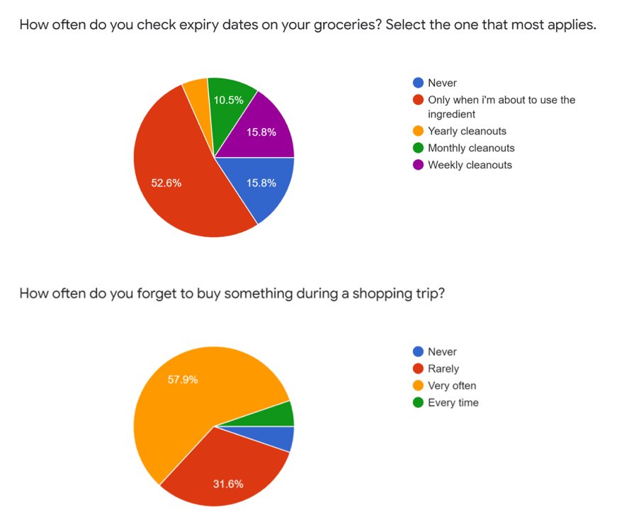
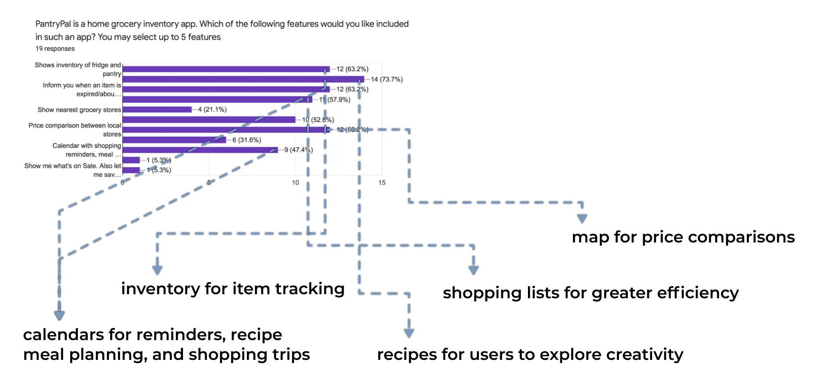

UI/UX/Product Design
PantryPal Kitchen Inventory Management App
My Role: UI/UX Designer
Skills: User Research, Wireframing, Prototyping, User Personas, User Testing
Tools: Balsamiq, Figma
Team Members: Summayah, Sonia, Regine, Tanvi, Chen
Background
This project was a group assignment for a Human-Computer Interaction course I took in 2020. I was part of a team of 5 classmates. Due to social distancing restrictions, this project was collaborated on remotely.
Challenge
Design with the theme 'Home Automation'. With more people spending mpre and more hours at home, people are looking for ways to enhance thier living experience. Students must design a solution that will be useful for families.
Product Description Statement
The app is designed for busy people to manage pantry and fridge inventories, assist with grocery-related shopping trips, and recommend healthy recipes based on inventory to make feeding a family easier.
Project Timeline

User Research
Online Questionnaire
Once we had settled on the idea of a kitchen management system, we created an online survey in order to gain perspective from people in other demographics. We tried to have at least one respondant from each age range, from teens to working adults in their 50s.
An important takeaway from our survey results was that people had felt that having reminders were essential to having a good experience with a management system. This was especially the case with reminders for things like expiry dates and shopping lists.
The most popular app feature ideas were translated into specific requirements for the app's prototypes.
User Personas
We made three user personas as well as context scenarios for each persona. Our personas attempted to cover people from different age ranges, and living circumstances who were involved in their grocery shopping and home kitchens in different ways e.g., parents, adults living alone, or children without their own money.
All these personas, for a variety of reasons, wanted to maximise the efficiency of their household's shopping.

Requirements
Before we started any sketches, we created and revised a list of functional and non-functional requirements. It was to ensure that all team members were on the same page as to what was expected of our sketches.
This mostly applied to the functional requirements, which listed features and their respective properties that should exist in our app. Non-functional requirements mostly weren't going to be implemented in our prototypes, but it was good practice for us to write them out anyway for a hypothetical development team to use a guideline for building an actual app.
Prototyping
Low Fidelity Wireframes
Since we were completing this project entirely remotely, we chose to use Balsamiq to create our first wrieframes. We wanted our app to work for mobile and tablet devices primarily. We ended up choosing tablet dimensions for the prototype demonstrations in order to visualise what the app could possibly look like on a smart refridgerator.


High Fidelity Wireframes
These prototypes were put together by all team members in Figma.
After signing in, the user is shown the home page. The following can be accessed on this screen:
- Any reminders, including expiry dates
- Shopping lists that are scheduled to happen soon
- Recently opened recipes
- Any other shortcuts to features of the app which can be customised by the user
Multiple shopping lists can be made. Users can chose to set a date for the trip and also a reminder.
List items can be new items or be selected from previously bought items in the inventory archive.
These lists can also be shared with others, like family members or housemates.
Recipes can be filtered based on keywords, categories, or constraints.
PantryPal will show whether or not the recipe ingredients can be found in the current inventory, or if they need to be purchased, in which case the items can be added to a shopping list directly from the recipe page.
Inventory items and their details need to be manually entered by the user.
If an item has been bought before, there is an 'Auto-Fill From Archive' option to save the user's time.
The app will generate reminders for expiry dates and low quantities.
User Testing
Using Balsamiq and Figma meant that we could add interactions via click to our wireframes. This was useful when it came to testing our PantryPal app interface.
Participants of our user tests were provided a link to the Balsamiq or Figma file. They could click and move around at their own pace, and thier screen would be shared with the the team. A member of our team would act as the facilitator, and introduce the user to the test process and receive formal consent for participation. The rest of the team acted mostly as observers and note-takers throughout the duration of the user tests.
The user test participants were asked to use the 'Think Aloud' technique, in which they were encouraged to narrate their actions and thoughts as they moved through the user test tasks. The observers on the team would note down the clicks, timings, and any verbal feedback provided by the participant.
A Usability Test Plan was drafted to ensure that the process remained as consistent and close as possible for all our participants. They would have four tasks to attempt to complete using the app wireframes. We would later tidy up and share our notes, so that we could then analyse and evaluate the data based on both performance and behavioural measures. We would then use this to create an issues table that would then inform any following changes we would make to our next iteration of prototypes.
For example, our low fidelity wireframe sketches had included:
- a map feature to locate nearby stores and supermarkets and compare prices of popular items available in their catalogues
- a meal planning feature to go with our recipe and calendar ideas
But both those features were later left out of our high fidelity prototypes because our user test results showed that the test participants almost never considered it necessary to click on or use them. Thus these features were considered low priority and left out of our following iterations of prototypes.
Reflection
This course allowed me to explore multiple facets of the product design process in detail, especially in the user-testing portion. We were limited by the online nature of the course, which hindered how much in-person activities we could conduct, especially in regards to user testing. Still, having other students to collaborate with was a very beneficial experience. This included my fellow team members, with whom I had a harmonious and productive time working with, as well as classmates that were in other groups, who were able to offer their time to help with user testing and feedback.
Our class tutor provided a lot of detailed and insightful feedback on not only the deliverables we had to produce as part of the courseload, but also on the process of putting it all together and relating the practical work we were doing to the theoretical knowledge we were given during the lectures.
I would credit this course as one of my earlier forays into UI/UX design and product design, and the experience that sparked an interest in this field for me. My experience with this project encouraged me to later sign up to take part in the Prodigi Product Design Program (click here to see that project!) and Client Design Program (click here to take a look at that project!).